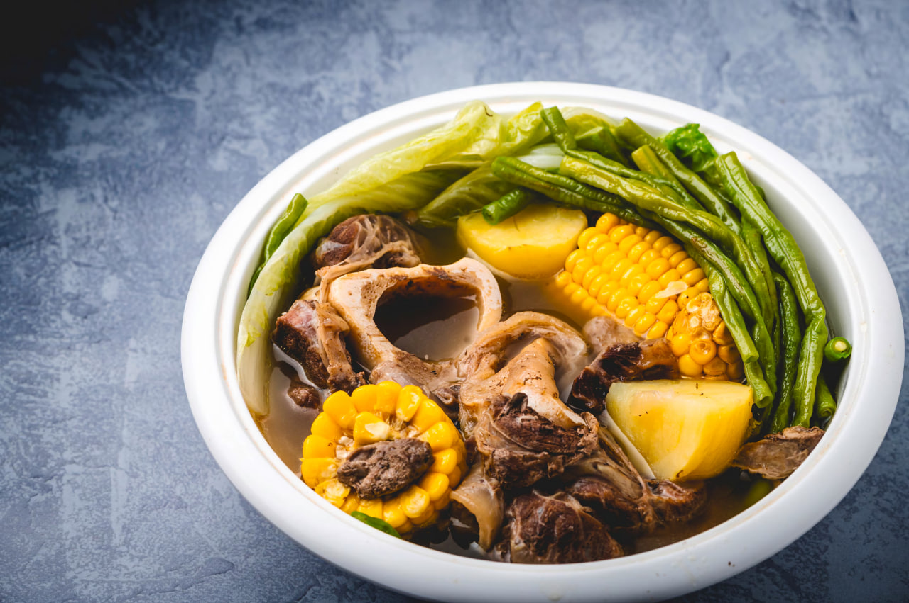

Batangas
Bulalo
Bulalo is a rich, comforting beef soup that originated in the province of Batangas in Southern Luzon. It is made by slow-cooking beef shanks and bone marrow for several hours until the meat is fall-off-the-bone tender and the broth is deeply flavorful. The soup is typically filled with leafy vegetables like pechay or cabbage, corn on the cob, and occasionally potatoes or plantains. Because Batangas is known for its cattle industry, Bulalo highlights the region's high-quality beef and is a beloved dish during rainy days or cool weather.

Gather
Ingredients
- Beef shank with bone marrow (bulalo cut)
- Sweet corn, cut into pieces
- Pechay (bok choy) or cabbage
- Potatoes, quartered (optional)
- Onion, chopped
- Garlic, crushed
- Whole black peppercorns
- Fish sauce (patis)
- Water
Make it
Recipe
- In a large pot, place the beef shanks and cover them with water. Bring to a boil and skim off the scum that floats to the surface to ensure a clear broth.
- Add the chopped onion, crushed garlic, and whole black peppercorns to the pot.
- Lower the heat, cover, and simmer for 2 to 3 hours, or until the beef is very tender. Add more hot water if the broth reduces too much.
- Once the meat is tender, add the sweet corn pieces and potatoes (if using). Simmer for another 10 to 15 minutes until the vegetables are cooked.
- Season the broth with fish sauce (patis) to taste.
- Add the pechay or cabbage during the last 2 minutes of cooking so they remain crisp and vibrant.
- Turn off the heat and serve immediately.
- Serve hot with steamed rice and a dipping sauce of patis, calamansi, and chili peppers.